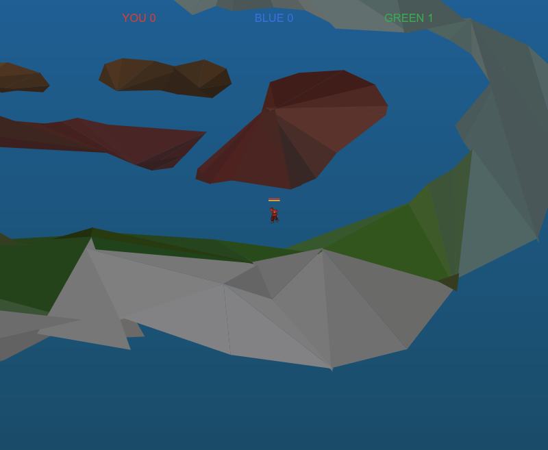

This code is generated by an AI. All of mini-soldat (the game, its tests, its build, this page) is written by Claude Code, Anthropic's coding agent, under the direction of Yoann Padioleau, who chooses what is built and reviews it.
How to play
You are the red soldier, against two bots. The first to 5 kills wins. Press space to start. The keys are Soldat's:
| a d | run left and right |
| w | jump |
| s | crouch |
| x | lie down, and get up |
| mouse | aim: a soldier faces its cursor |
| left button | shoot |
| right button, or shift | the jets, while the fuel lasts |
And its moves: s and a side while running, a roll; w and a side, a jump sideways; the jets' key during a jump sideways with the other side held, a backflip; lying, a side crawls.
Two variants: bots that know only what they have seen, and react as late as a hand does, instead of bots that see through the walls; and the points the game tests, drawn over the soldiers.
Where it is
At its beginning. It started as elm-playground's TinySoldat, a toy. Two things are Soldat's own by now. The map: Arena2, read from its file, its polygons in flat colours for now, without its textures and its scenery. And the soldier: how it moves (its run, the wind-up of its jump, its roll, its jets, by Soldat's rules and numbers, adapted from its Pascal) and how it looks (its pictures, one on each limb of its skeleton, played by its 44 animations, its head and its arms turned to the cursor). The gun, a single pistol, and the bots are still the toy's. The goal is the real game: Soldat's maps and soldier as they look, its weapons, its feel, and play over the network. The source is at github.com/aryx/mini-soldat.
Credits
Soldat is the work of Michał "MM" Marcinkowski, who wrote it and released it in 2002, and of Transhuman Design, his studio. The game, its design, its feel, its maps and its soldier are theirs; mini-soldat only imitates them, and is neither affiliated with nor endorsed by them.
Soldat's sources were opened under the MIT license and are maintained as OpenSoldat by its contributors; its content is opensoldat/base, under CC BY 4.0. Both are the reference this clone is written from. Go and play the real one: its releases.